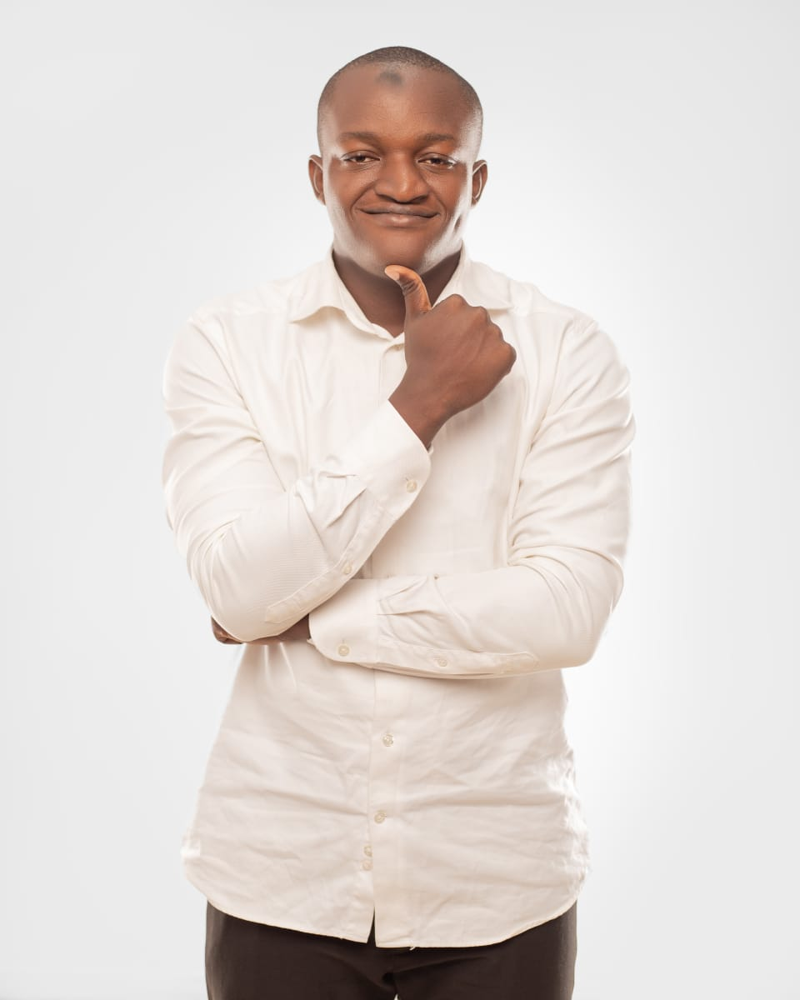

Chacun apporte son savoir-faire et sa passion au service de projets environnementaux d'envergure.
Acteur engagé pour la préservation de l'environnement et pour la promotion du développement durable. Il supervise les orientations stratégiques, les partenariats institutionnels et les grands programmes d'action de l'ONG ACT'ERE.

Secrétaire général de l'ONG Act'ère, il coordonne les activités de terrain et assure la liaison entre les équipes techniques, les partenaires et les communautés locales.
Chargée de la communication et des partenariats, elle développe les relations avec les sponsors, les entreprises et les institutions pour soutenir nos projets de transition énergétique et de reforestation.
Responsable des actions pour la préservation de la faune et de la flore, elle encadre et coordonne les activités au sein de l'équipe et en dehors.

Responsable de la commission thématique, il est chargé de l'évaluation scientifique des projets, de la mesure de l'impact environnemental et de la mise en place de protocoles écologiques.
Responsable chargé de la communication et des relations extérieures, il assure la communication et la gestion des relations extérieures de l'ONG.

Vice-président de l'ONG ACT'ERE.

2eme vice-présidente de l'ONG ACT'ERE, Chargée des projets et des formations.
Trésorière générale de l'ONG ACT'ERE, chargée de la gestion financière et comptable de l'organisation.
Commissaire aux comptes de l'ONG ACT'ERE, chargée de l'audit financier et de la vérification des états comptables.
Responsable adjointe de la commission thématique de l'ONG ACT'ERE, dédiée à la promotion de l'égalité des genres et à la lutte contre les discriminations.
Chacun de nos projets est guidé par une éthique rigoureuse et une transparence totale.
Nous privilégions toujours l'impact réel et vérifiable sur le terrain aux déclarations sans lendemain.
Nous co-construisons chaque solution en écoutant d'abord les besoins exprimés par les communautés locales.
Tous nos équipements et démarches sont conçus pour durer et régénérer les écosystèmes dans le temps.
Former la jeunesse et lui donner le pouvoir d'agir est la seule garantie d'une préservation pérenne.
L'ONG ACT'ERE est toujours heureuse d'accueillir des volontaires engagés, des étudiants en quête de sens ou des spécialistes souhaitant apporter leur pierre à l'édifice.